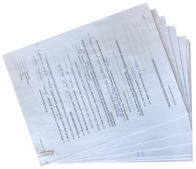
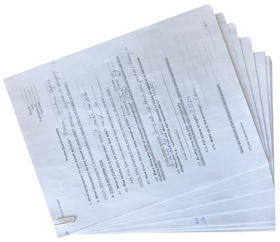
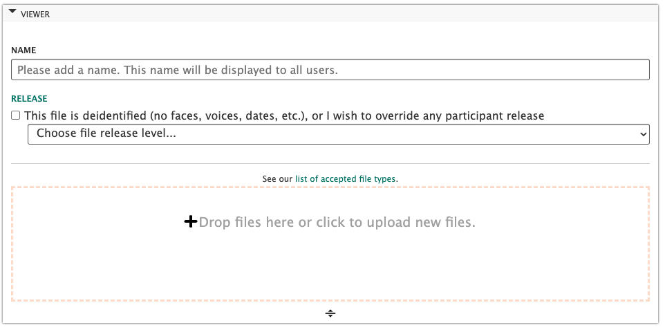

Protocol
Scheduling & Enrolling Participants
Follow the translated scripts calling for calling, emailing, texting, and talking to interested families. Ensure the child meets inclusion criteria:
- Was [CHILD] born on his/her due date?(If not: How many weeks and days early/late was he/she?)
- → If more than 4 weeks early: end. In this study, we are currently looking for children born on term. Would it be alright if we reached out you for other studies in the future?
- → If born on term (36-41 weeks): continue
- Has a medical professional told you that your child has a delay or impairment in their vision, hearing, speech, cognition, or motor development?
- → If yes: end. In this study, we are looking children without delays or impairments. Would it be alright if we contacted you for other studies in the future?
- → If no: continue
Schedule the visit for a time it can be only the mom and target child at home, if possible. And not during the child’s nap time. Because we are interested in mother-infant routines, we’d like to find a time and date when we can observe just you and [CHILD] at home. It would be great if we can schedule when [CHILD] is usually awake.
Demographic questionnaire
The Demographic Questionnaire can be completed via the digital app after scheduling the family (if the home visit is not more than 2 weeks away), or wait until doing a confirmation call the day before the visit. Before the study, we have a few questions that we’d like to ask. It should only take about 10-15 minutes. We can either ask you now or when we call to confirm the study. What would you prefer?
Databrary session creation
When completing the Demographic Questionnaire, the subject number should be assigned for that participant. Look at the latest subject number assigned for a session on your site’s Databrary volume. Select the next sequential number. (Note, if a visit is cancelled or does not pass QA, do NOT replace that subject number.)
Use details from the Demographic Questionnaire to create a Databrary session and complete the demographic information

The digital app will generate what to label the session and details to enter.
- Name the session as BABIES_SITE_###. Use your letter code for SITE. Use 3 digits for subject number (###).
- Leave the test date blank until home visit is completed
- Leave release level unknown until mom has completed the Databrary permission form
- Setting will always be Home
- Enter all languages spoken to the child in descending order from most to least frequent (e.g., “Cantonese, English”)
Preparing For Home Visit
Equipment & materials
|
 |
|
  |
|
    |
Prepare to be in the home
- Take your own water with you. For the duration of the visit, you will decline any offerings of food or drink.
- Plan your bathroom breaks around the visit (it will be approx 2 hrs long).
- Take your university ID with you, be prepared to show it if asked.
- Dress plainly, modestly, neutrally. Nothing too bright and attractive to children. Avoid strong perfumes and noisy jewelry. The idea is to blend into the background as much as possible. Try not to wear all black either.
Home Visit
At the end of every home visit (for each participant), researchers will upload the following:
exactly 3 videos (to their site’s Databrary volume)
- One-hour natural activity
- House walkthrough (include: sleeping arrangements, clothing, books, toys)
- Questionnaires (set up camera on tripod, focus on mom)exactly 1 CAD file from Matterport (to their site’s Databrary volume)
exactly 3 questionnaire files (through the digital app)
- demographics questionnaire
- home visit questionnaire
- post-visit notes
The 3 tasks may be completed in any order, however, the recommended ordering is listed below, since the one-hour natural activity is the crux of the home visit. Questionnaires can be completed remotely (via Zoom) so long as the parent has internet access, the session can be screen recorded, and their face and voice appear on camera. If the child is asleep when you arrive, it’s okay to start with the questionnaires. Then, when the child wakes up, stop and return to the questionnaires later and being the one-hour natural activity.
1. Arrival & introduction
Experimenters should always act in a professional and respectful manner when interacting with the participants and while in the home. Do not make comments or react to anything in front of the mom to make her feel uncomfortable. All families should feel that their participation in the study is meaningful.
Say: Hi, my name is [NAME] and I’m visiting from [INSTITUTION]. Thanks for letting us come to your home today!
Ask if you should take your shoes off.
- Ask for good place (i.e. out of child’s reach) to put backpack and coat.
- Do not leave the tripod and other equipment lying around.
- Do not engage or warm up to the baby. Just need to make mom feel comfortable.
If other people are still in the home, mention to the mom it’s time to start the part of the study where it’s just the mom and child for 1 hour. Ensure anyone else—especially siblings—have planned to leave the home (for at least 90mins), or that adults can stay in a room the child and mom will not want to access.
2. Consent to participate
Experimenter should explain the study and ask mom to sign the consent.
Say: The visit has a few parts. I’ll begin by video-recording you and [CHILD] as you go about your day. I will video-record you both for one hour. Afterwards, I’ll ask you to give me a walk-through of your home that I will record on video to get a sense of the places [CHILD] goes and things that he/she plays with; then I’ll take a 3D mapping of your home using another camera. Finally, I will ask you some general questions about your family and home, and about [CHILD]’s skills and routines. Everything will be video-recorded and the visit will last for no more than three hours. You will receive compensation for your participation at the end. Do you have any questions? Okay, great. Here is the consent form that explains everything I just said. Please read it through and then print and sign your name on the back.
3. One-hour natural activity
Begin recording
Say: For the next hour, do anything you would typically do as if I weren’t here. Try to ignore me as much as possible and I will stay out of the way. I will also try not to respond to you and [CHILD] so that he/she is not distracted. You can go anywhere in your home but we just ask you to remain indoors. You can play together or not, you can do chores, watch TV, talk on the phone, give him/her a bath or snack. The idea is to capture what your typical day is like. And as a reminder, I’m just here to record so you will be in charge of [CHILD]’s safety.
Point the camera at the child and start timing for the one-hour natural activity video.
Aim to get 60 minutes of uninterrupted natural activity, in addition to the time you take to give instructions. The natural activity should comprise a single recording; not piecemeal recordings that add up to 60 minutes.
Keep the camera on the child at all times. Specifically, ensure that the child’s whole body is visible on camera. If mom is in frame, capture as much of her body as possible without compromising the view of the child.
Record in front or to the side of the child as much as possible.
Do not zoom in.
Always try to stay toward the edge of rooms and doorways. You do not want to influence child to interact with you, or get in child’s way.
Remain at as far a distance as possible (~3 to 5 m, hugging the wall) so that the child is not distracted by your presence.
Do not interact with the child or make eye contact with the child. Just watch through the viewfinder of the camera.
The child does not need to be happy or engaged with the mom; the mom does not need to play with or consistently interact with the child. They can turn on TV, music, phones, or other devices. She can make a phone or video call. In short, they can both do whatever they want for 1 hour.
If the mom talks about your presence (even to discourage child from interacting) more than 3 times, after the third time Say: Why don’t we pretend I’m not here.
If mom asks to pause the camera (to change or feed), ask for permission to record from behind Say: Is it okay to keep the camera running and I’ll film you from behind? . Otherwise, keep the camera running and film the floor to continue capturing audio Say: Can I keep the camera running and just film the floor?
If something happens within the first 10mins of the recording that is a protocol violation (e.g., dad returns home and interacts with the mom or child; camera battery dies), restart the 1 hour recording in full (rather than adding more time at the end).
If something happens within the final minutes of the recording that is a protocol violation (e.g., child starts to fall asleep, mother in law enters the room they are in), keep recording and finish out the 60 minutes. Enough of the visit may still be usable to pass quality assurance.
At the end of the one-hour recording, Say: Great, we are done with the one-hour recording!
Stop recording
4. Home environment
House walkthrough
Begin recording
Say: Now, we would like to see the space that [CHILD] gets to explore throughout the day. Please walk me through your home as I follow with a camera. As we walk around, please show me where you keep any objects — toys, books, sippy cups, anything like that — that [CHILD] might interact with. Please show me where he/she sleep, and where you keep his/her clothes and shoes to give us an idea of the kinds of things he/she wears.
Start at the entrance of the home.
Pause at the entrance of each room.
Audibly name the room by its function (e.g., This is where [CHILD] sleeps).
First, get as much of the Entire Room in frame as possible. Keep the camera zoomed out and make sure to capture the ceiling and the floor of the room.
Next, pan the camera SLOWLY from Left to Right.
Then, pan the camera to Floor, name the different types of surfaces in the space (hardwood, plush carpet, thin rug, linoleum, tile, etc.), and then pan to the Ceiling.
Ask parent if child spends time in each room: Does [CHILD] spend any time in this room?
Ask parent about child’s objects in the room: Do you keep anything for [CHILD] in this room? (If yes) Would you mind showing me?
Ensure during the house walkthrough that the parent provides information on all of the following:
- Child’s Sleeping Arrangements. Please show me where [CHILD] typically sleeps.
- Child’s Clothes. Please show me where you keep [CHILD]’s clothes.
- Child’s Shoes. Please show me where you keep [CHILD]’s shoes.
- Child’s Books. Please show me where you keep [CHILD]’s books.
- Child’s Toys. Please show me where you keep [CHILD]’s toys.
Film the Location of the storage spaces (drawer, toy chest, cabinet) in clear context of the rest of the room. Then, SLOWLY and CLEARLY film the Contents of the storage space to show what is inside of it, zooming in if needed. (Overhead view for bed, crib, drawers, toy chest, etc.; Zoomed in side view for cabinet, closet, bookshelf, etc.)
Do NOT turn off the camera when walking to next room.
Walk SLOWLY.
When all rooms are recorded, walk back to the entrance of the home.
If the mother says that the child does not go into a particular room, ask to record anyway, Say: We are just are interested in the spaces children go, as those they do not. Is it okay to record this room anyway? If the mom does not give permission to record a room, for instance, the grandmother is sleeping in there, that is okay; please say to the camera in English about the mom asking you not to film there and why.
Stop recording
3D rendering
Setup and pair Matterport
Remove Matterport components from the case and assemble, ensuring camera is stable and tightened on the mount and that the camera is level. Turn on Matterport and wait until broadcast signal turns yellow and blinks.
Go to WiFi settings on phone or digital device and select Matterport. NOTE: Your device should be paired with Matterport prior to visit, while in the lab. Make sure broadcast signal on Matterport stops blinking (this means it is paired).
Move room to room and take digital mapping
Plan route through home (you should have gotten an idea from the house walkthrough).
Take at least 3 measurements of each room until spaces on device show they have been captured (take more measurements for larger and connecting rooms).
Be strategic about where you start in each room, and be sure to only move the camera ~2m between scans.
If you haven’t captured a given region it will show up as blacked out on your device
If you need to readjust the height of the Matterport tripod, you can easily do so. The camera will take into account these height differences
5. Questionnaires
Setup questionnaire before home visit
Make sure to setup the questionnaire in the digital app before leaving the lab! Once in the home you may not have cellular service or wifi access, and questionnaires can be run complete offline. Complete all portions of the questionnaire that contain identifiable information (e.g. child’s name) during in-lab setup.
Administer questionnaires orally during the home visit
Position yourself in front of mom, with the paperwork between you.
Set up the tripod to capture both you and mom. You will need to change the battery on the camera to ensure sufficient power.
Give mom a copy of the Colored Answer Scales
Give mom a copy of the Vocabulary inventories so that she can follow along when needed
You will administer all the questionnaires orally and enter data digitally. In case of technical issues (and to have a paper copy of all questionnaires during home visits), please download the pdf version of the questionnaires. (Please note that presentation and format will differ from the KoBo Toolbox app.)
Begin recording
Say: For this part of the study, I will be asking you some questions about [CHILD]’s skills and routines, as well as some general questions about your home and family.
Continue orally administering each questionnaire, reading the instructions for each section from the digital app.
The mother must be the primary respondent during the questionnaires, so if another family provides input ensure the mother agrees with their response (when in conflict, always take what the mother says).
The experimenter should keep the pace for all questions. Do not let the mother skip or jump ahead; for instance, during the vocabuarly measures, read every word aloud to the mom and do not let her pick out certain words from her copy of the form.
Listen to the mom! If she does not appear to understand our criteria—for example, thinking that “understanding” the word ‘pants’ means the child knows pants go on their leg—gently correct the mom.
All questionnaires should be administered and responses recorded in the primary language of the mom. However, it is okay to use a second language to help explain or clarify if needed.
Once all sections are completed, save the responses as a draft and put away your device (do not close the digital app). Responses can be digitally submitted once back in the lab.
Keep recording
7. Visit wrap-up
- Ensure that mom has copies of the consent and Databrary forms
- Collect and pack all equipment and paperwork from the house
- Thank mom for letting us come to her home!
Clean-up, Post-visit Notes & Databrary Upload
After each visit, when you arrive back at your lab, complete all the following steps on the day you collected the data or on the very next day.
Submit home questionnaires.
Complete and submit Post-Visit Notes
Upload all videos from the visit to Databrary onto your institution’s BABIES volume.

Use the naming convention for each of the four videos. Use your letter code for SITE. Use 3 digits for subject number (###).- Name the session as: BABIES_SITE_###
- Name the Natural Activity video as: BABIES_SITE_###_NaturalActivity
- Name the House Walkthrough video as: BABIES_SITE_###_HouseWalkthrough
- Name the Questionnaires video as: BABIES_SITE_###_Questionnaires
- If the House Walkthrough or Questionnaires were broken into different recordings, mark each with “_part1” “_part2”.
Upload Matterport data to Databrary.
Select appropriate release level for session in Databrary.
Enter the Test Date and make sure that all fields on Databrary are filled out.
Fill out Google form to submit session for quality assurance. https://forms.gle/46hEdJyWcUNJU43y6
Clean equipment. Once videos have been uploaded, delete all videos from SD card. Make sure to put away all equipment to have ready for a next visit.